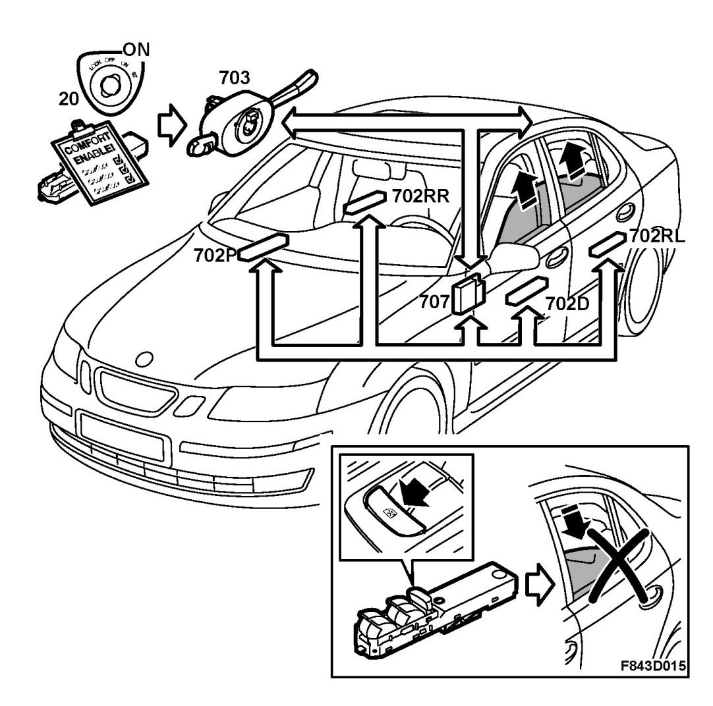
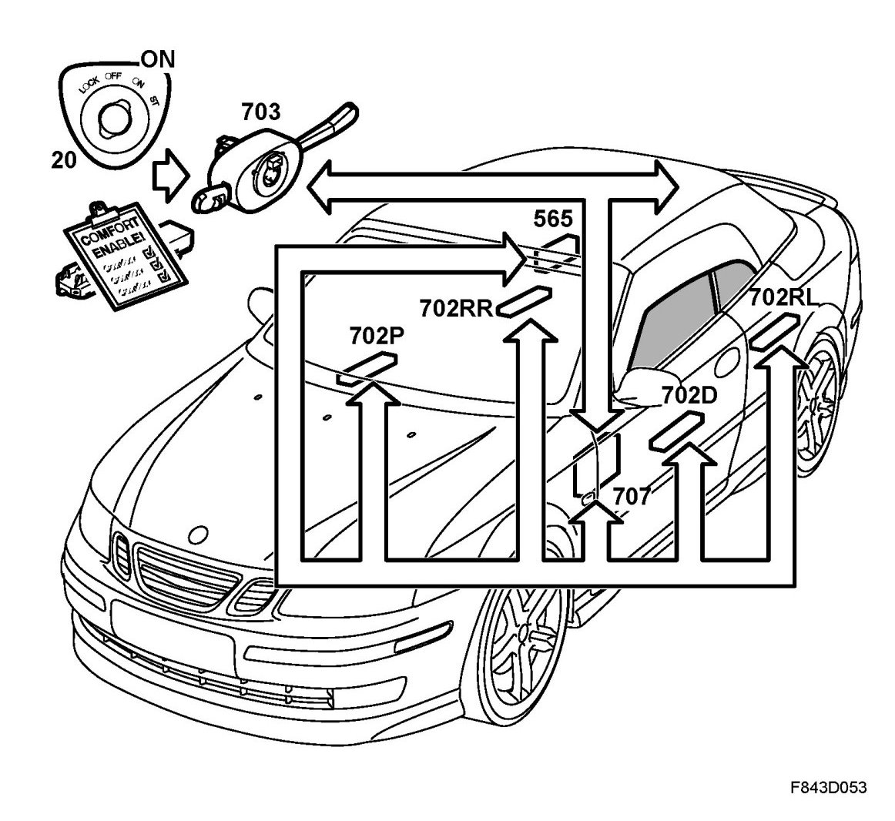
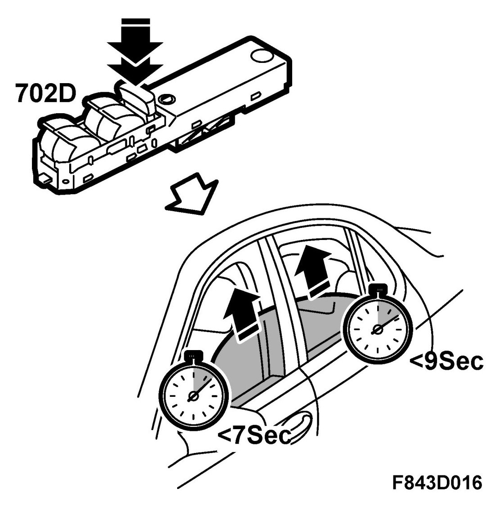
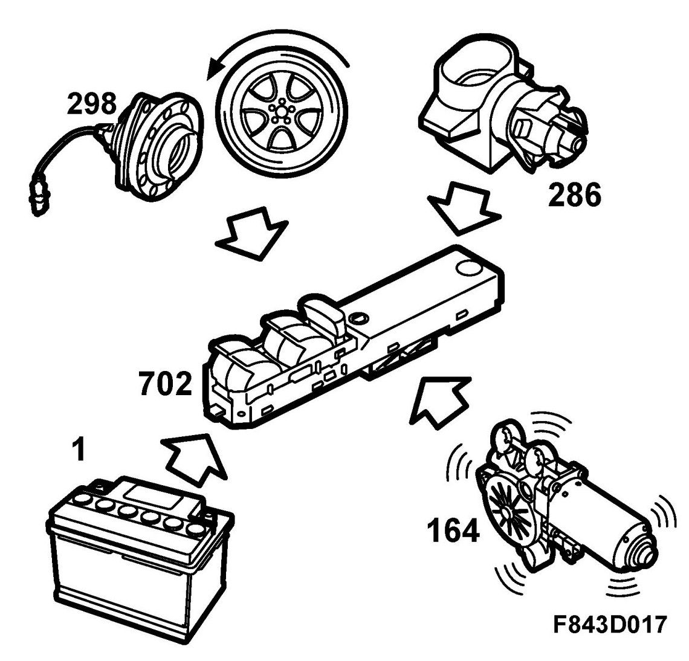
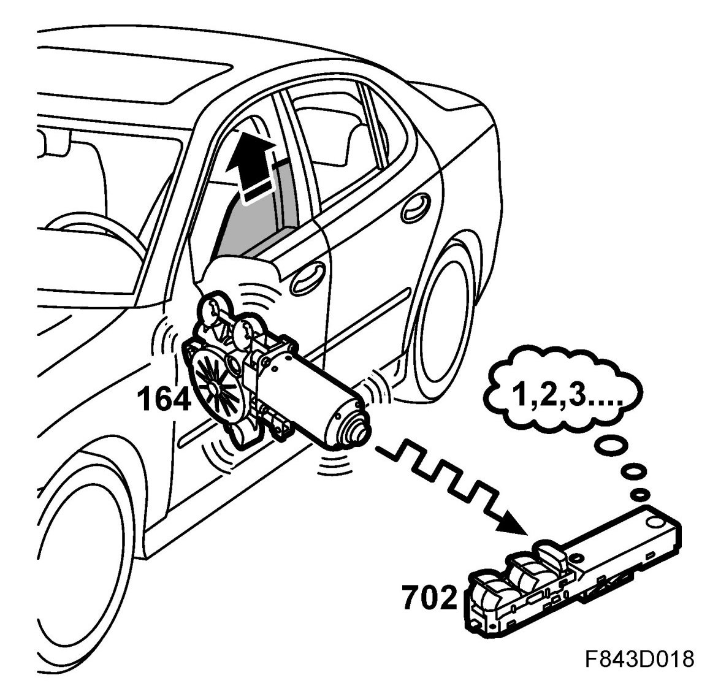

Electrically Operated Window Lifts, Detailed Description
Electrically Operated Window Lifts, Detailed Description
General
The window lifts can be operated when the ignition key is in the ON position providing the conditions for comfort function, are satisfied. The key position is given by the CIM. The rear window lifts can only be operated if the blocking function has not been activated with the button on the driver's door.
4D, 5D

CV

The DDM transmits a bus message indicating the blocking status. If blocking is activated the colour of the button's illumination changes to orange and the illumination of the rear door buttons is switched off. The DDM establishes the steering wheel position from a bus message from the BCM and then determines which of the 4 window lift buttons is fitted to the driver's door. This switch is then configured to enable it to activate the window lift motor in the driver's door. The status of the remaining buttons is also transmitted on the bus. The control modules in the passenger doors activate their respective motors depending on the bus message from the DDM and the position of their respective buttons.
When the soft top is retracted the side windows are fully lowered. When the soft top is raised the side windows are lowered slightly:
- Cars with pinch protection: the windows are lowered to a predetermined intermediate position
- Cars without pinch protection: the windows are lowered for 0.5 seconds.
Window lifts, standard design
If the conditions for activating the motor are satisfied the door module reads the button status and the bus message and directly activates the motor with an appropriate polarity. With the express down function the motor is driven continuously. The door control module senses when the window is fully lowered by current measurement and switches off the motor accordingly. The maximum time which a motor can be activated is 7 s for the front lifts and 9 s for the rear lifts.

Window lifts with "Express up"
With the button in positions "Up / Down / Express down" the lifts function as standard lifts. In the "Express up" position the window is raised fully but stops and lowers slightly if pinching is detected. The pinch protection function is active when the window is closed with the door button or as a result of comfort control. In order to detect pinching use is made of information about the position, speed and current consumption of the motor, the car's speed (from the ECM) and the outer temperature (from the BCM).

The 2 Hall sensors together give one pulse every quarter revolution of the motor. The motor speed and current (inertia) characteristics are stored in memory and are adapted to compensate for wear and other normal changes which occur over a period of time. If during window closing the speed drops excessively or the motor current is too high, relative to the stored characteristics, pinching is assumed. The adapted characteristics are continuously corrected to allow for changes in battery voltage, outer temperature or the speed of the vehicle. For example, with high vehicle speed and low outer temperature, a higher current and lower window speed must be permitted.
The pinch protection is inhibited immediately before completion of closing, just as the window enters the upper frame channel. If the function were to remain active at this position then the window would lower again after closing. The stroke of the window is stored in memory based on dead reckoning from the end points which are detected by current monitoring. In this manner it is possible, without risk and with great accuracy, to deactivate the pinch protection just before the window is fully closed.
WARNING: The trap protection is not active until the window lifters have been calibrated after a power failure.
Calibration of pinch protection
The end positions and travel must be calibrated following mechanical work affecting the end position of the window, the replacement of the motor, door control module, work on the window lift system components - including the window's rails and weatherstrips, as well as following a loss of power such as when the battery is replaced. Calibration must be carried out after all work involving the removal of the door trim. Before the end positions have been calibrated, express closing will be disabled, which also means that the comfort closing (certain markets) and pinch protection functions will be inoperative.

In order to ascertain whether a window is calibrated or not, pull the window button to its upper position and release. If the window does not shut automatically then the door control module requires calibration.
Before proceeding with calibration the following should be noted:
- The engine should be running
- The voltage should exceed 11.5 V
- The door should be closed
- Only one control module may be calibrated at a time owing to voltage variations
- The calibration can be carried out from the control module in the driver's door or from the specific door module.
libration is performed as follows: See Calibration of pinch protection.